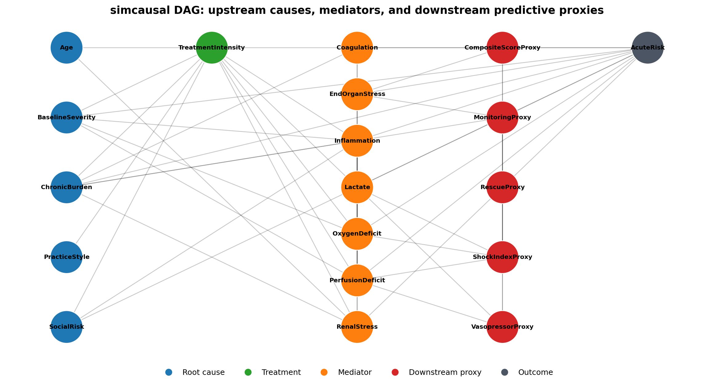
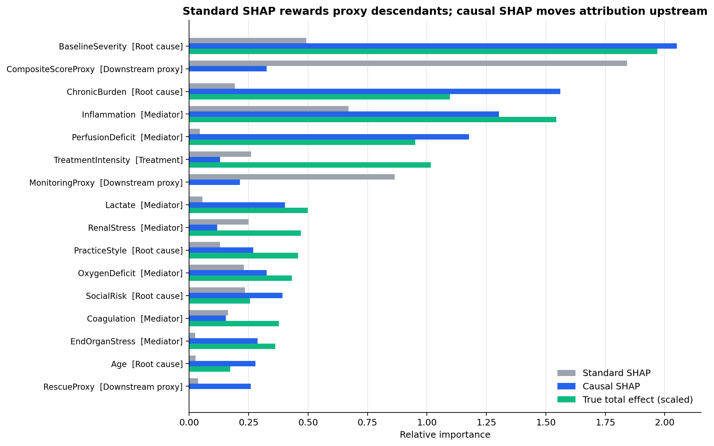
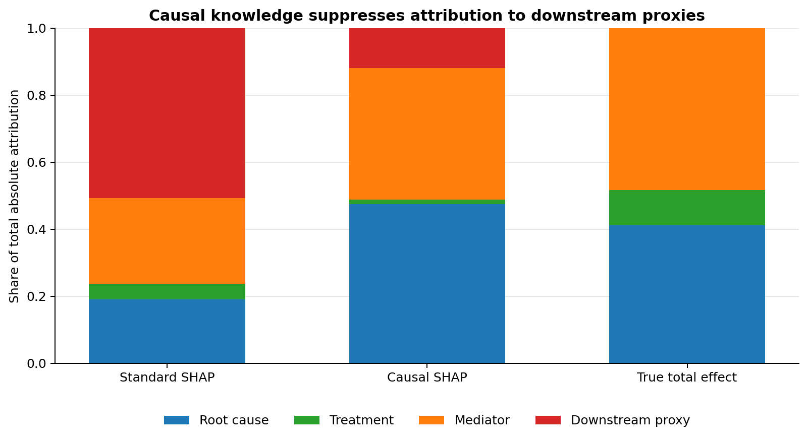

Run Summary
The included run uses 2,500 simulated rows, 18 predictors, a gradient boosting outcome model, and a modest causal SHAP Monte Carlo setting suitable for a live laptop demo.
0.941
held-out model R2
51% -> 12%
downstream proxy attribution share
0.22 -> 0.44
Kendall rank agreement with true total effects
4.33 -> 3.33
mean absolute rank error
DAG Structure
Blue nodes are upstream root causes, orange nodes are mediators, red nodes are downstream proxy descendants, and the gray node is the outcome. The red proxies summarize the process but do not cause the outcome.

Feature Recovery
Ordinary SHAP ranks the composite proxy and monitoring proxy first. Causal SHAP suppresses those descendants and recovers the larger upstream and mediator effects.


Reproduce
Rscript demo\simcausal_many_mediators.R 2500 20260506 demo\output
py -3.13 demo\run_causal_shap_demo.py --output-dir demo\output --n-perms 16 --n-background 8 --n-instances 12